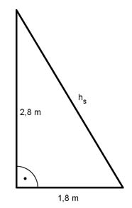

Aufgabe 226 Wie viel Stoff braucht man, um ein Zelt in Form einer quadratischen Pyramide mit einer Höhe von 2,8 m und einer Grundseite von 3,6 m zu bauen?

O = G + M G = 3,62 m2 = 13 m2 Satz von Pythagoras für die Seitenhöhe hs: hs2 = 2,82 m2 + 1,82 m2 = 11,08 m2 |√ hs = 3,33 m 3,6 m * 3,33 m M = 4 * ----------------- = 24 m2 2 O = 13 m2 + 24 m2 = 37 m2